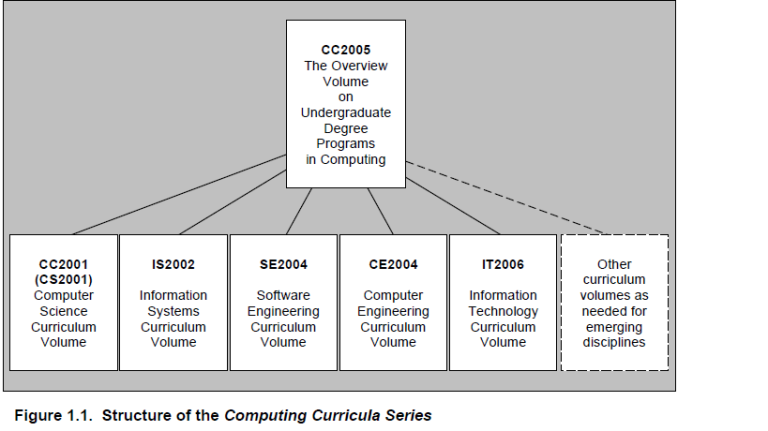
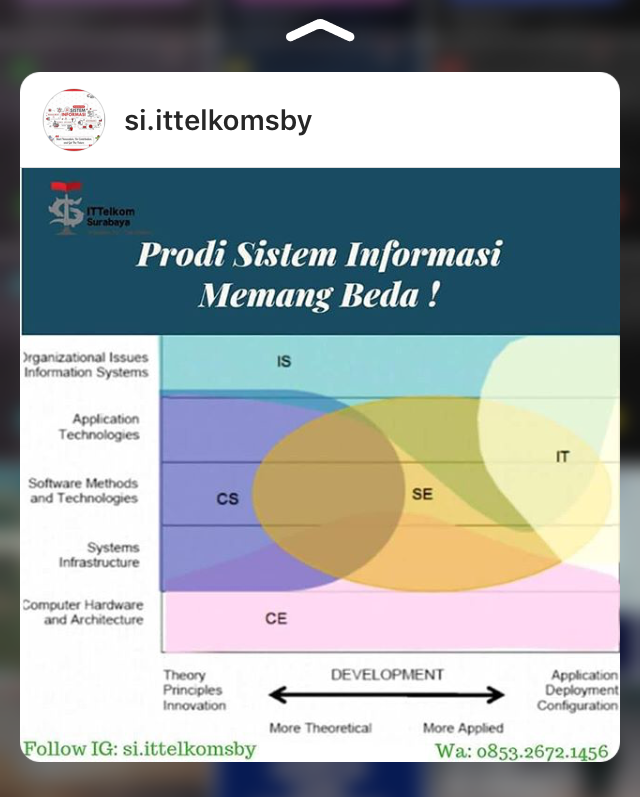
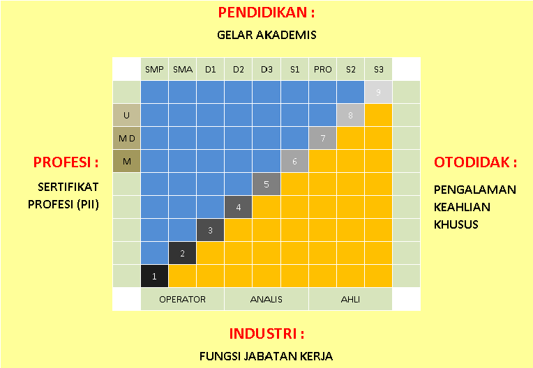
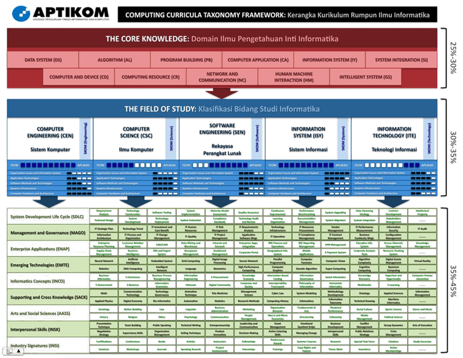

RANGKUM 3 E-BOOK
COMPUTING CURICULLA 2005 (CC2005)
Latar Belakang Dan Sejarah
Association for Information Technology Professionals didirikan pada 1951 sebagai Asosiasi Akuntan Mesin Nasional. Pada tahun 1962, ia menjadi Asosiasi Manajemen Pemrosesan Data . Ini mengadopsi nama sekarang pada tahun 1996. AITP berfokus pada sisi komputasi professional, melayani mereka yang menggunakan teknologi komputasi untuk memenuhi kebutuhan bisnis dan organisasi lain. Ini pertama kali memberikan rekomendasi kurikulum untuk IS pada tahun 1985.
Computer Society of the Institute for Electrical and Electronic Engineers berasal pada tahun 1946 sebagai komite perangkat komputasi skala besar dari American Institute of Electrical Engineers dan, pada tahun 1951, sebagai Kelompok Profesionalpada Komputer Elektronik tdia Institute of Radio Engineers . AIEE dan IRE bergabung pada tahun 1964 untuk menjadi IEEE, dan kedua subunit bergabung untuk menjadi Computer Society. Computer Society adalah masyarakat teknis dalam IEEE yang berfokus pada komputasi dari perspektif engineering. Saat ini anggota Computer Society termasuk insinyur komputer, insinyur perangkat lunak, ahli teknologi komputer, dan ilmuwan komputer. Mulai memberikan rekomendasi kurikulum pada tahun 1977. Dalam beberapa tahun terakhir, ada overlap besar dalam keanggotaan antara ACM dan Computer Society.
Pedoman kurikulum terperinci untuk program gelar sarjana dalam ilmu komputer. Karena laporan CC2001 menyertakan pedoman kurikulum CS, mereka yang merujuknya untuk konten ilmu komputernya mungkin memikirkan CS2001s.
Tujuan dan Pengenalan
Laporan ini memberikan gambaran tentang berbagai jenis program gelar sarjana dalam bidang komputer yang saat ini tersedia dan untuk standar kurikulum yang sekarang, atau akan segera tersedia. Laporan ini akan sangat dibutuhkan oleh Guru, administrator, siswa, dan orang tua. Berbagai program gelar dalam komputasi menyajikan siswa, pendidik, administrator, dan pemimpin komunitas lainnya dengan pilihan tentang di mana memfokuskan upaya mereka.
Pembaca yang menginginkan informasi rinci tentang salah satu dari lima disiplin yang tercakup dalam laporan ini harus berkonsultasi dengan sumber asli. Kurikulum volume komputasi dapat ditemukan di source
Ruang Lingkup
Ringkasan
Komputasi telah secara dramatis mempengaruhi kemajuan dalam sains, teknik, bisnis, dan banyak bidang usaha manusia lainnya. Di dunia saat ini, hampir semua orang perlu menggunakan komputer, dan banyak yang ingin belajar komputasi dalam beberapa bentuk. Komputasi akan terus menghadirkan peluang karir yang menantang, dan mereka yang bekerja dalam komputasi akan memiliki peran penting dalam membentuk masa depan. Setelah publikasi Laporan Overview, Satgas Gabungan akan menerbitkan laporan pendamping yang lebihsingkat, Panduan untuk Program Sarjana dalam Komputasi.Deskripsi Disiplin Komputasi Utama
Teknik komputer
Mahasiswa teknik komputer mempelajari desain sistem perangkat keras digital termasuk sistem komunikasi, komputer, dan perangkat yang berisi komputer. Mereka mempelajari pengembangan perangkat lunak, berfokus pada perangkat lunak untuk perangkat digital dan antarmuka mereka dengan pengguna dan perangkat lain. Studi CE dapat menekankan perangkat keras lebih dari perangkat lunak atau mungkin ada penekanan yang seimbang. CE memiliki rasa rekayasa yang kuat. Saat ini,area inant domdalam teknik komputasi tertanam sistem, pengembangan perangkat yang memiliki perangkat lunak dan perangkat keras yang tertanam di dalamnya.
Ilmu komputer
Ilmu komputer mencakup berbagai macam, dari fondasi teoritis dan algoritmik hingga perkembangan mutakhir dalam robotika, visi komputer, sistem cerdas, bioinatika, dan area menarik lainnya. Mereka merancang cara baru untuk menggunakan komputer. Progress di area CS jaringan, database, dan manusia-komputer-antarmuka memungkinkan pengembangan World Wide Web. Sekarang peneliti CS bekerja dengan para ilmuwan dari bidang lain untuk membuat robot menjadi ajudan praktis dan cerdas, untuk menggunakan databaseuntuk menciptakan pengetahuan baru, dan menggunakan komputer untuk membantu menguraikan rahasia DNA kita. Ilmu komputer mencakup rentang dari teori melalui pemrograman. Kurikulum yang mencerminkan luasnya ini terkadang dikritik karena gagal menyiapkan lulusan untuk pekerjaan tertentu.
Sistem Informasi
Spesialis sistem informasi memainkan peran kunci dalam menentukan persyaratan untuk sistem informasi organisasi dan aktif dalam spesifikasi, desain, dan implementasinya. Akibatnya, para profesional tersebut mengubahuire pemahaman yang baik tentang prinsip dan praktik organisasi sehingga mereka dapat berfungsi sebagai jembatan yang efektif antara komunitas teknis dan manajemen dalam sebuah organisasi, memungkinkan mereka untuk bekerja secara harmonis untuk memastikan bahwa organisasi has informasi dan sistem yang dibutuhkan untuk mendukungoperasinya. Sebagian besar program Sistem Informasi berlokasi di sekolah bisnis. Semua gelar IS menggabungkan kursus bisnis dan komputasi.
Teknologi Informasi
Teknologi Informasi adalah pelengkap dari perspektif itu: penekanannya adalah pada teknologi itu sendiri lebih dari pada informasi yang disampaikannya. IT adalah bidang baru dan berkembang pesat yang dimulai sebagai respons akar rumput terhadap kebutuhan bisnis dan organisasi lain yang praktis dan sehari-hari. Saat ini, organisasi dari setiap jenis tergantung pada teknologi informasi. Mereka harus memiliki sistem yang sesuai di tempat. Sistem ini harus bekerja dengan baik, aman, dan ditingkatkan, dipelihara, dan diganti sebagai appropriate.
Rekayasa Perangkat Lunak
Rekayasa perangkat lunak adalah disiplin mengembangkan dan memelihara sistem perangkat lunak yang berperilaku andal dan effici,terjangkau untuk mengembangkan dan memelihara, dan memenuhi semua persyaratan yang telah didefinisikan pelanggan untuk mereka. Sejumlah institusi menawarkan program gelar rekayasa perangkat lunak. Di tempat kerja, istilah insinyur perangkat lunak adalah label pekerjaan. Tdi sini tidak ada definisi standar untuk istilah ini ketika digunakan dalam deskripsi pekerjaan. ACM (IS 2010)
Penggunaan Laporan Kurikulum IS 2010
IS 2010 adalah serangkaian kurikulum model terbaru untuk gelar sarjana dalam Sistem Informasi. Ini merupakan revisi besar dalam kurikulum dan menggabungkan beberapa karakteristik baru yang signifikan. IS 2010 adalah upaya kolaborasi ketiga oleh ACM dan AIS. IS 2010 mencakup elemen yang membuatnya lebih mudah beradaptasi secara universal daripada pendahulunya. Revisi kurikulum ini merupakan upaya untuk mengevaluasi kembali prinsip-prinsip inti dari kedisiplinan melalui spesifikasi yang sangat hati-hati dari hasil pembelajaran gelar. Akhirnya, teknologi jejaring sosial baru memungkinkan untuk mencoba memasukkan komunitas SI seluas mungkin.
Laporan kurikulum model sarjana Sistem Informasi (IS) memiliki beberapa kelas pengguna yang dimaksudkan yang memiliki saham dalam pencapaian program gelar IS berkualitas:
- eksekutif akademik kepada siapa laporan program Sistem Informasi
- kepala akademis yang bertanggung jawab untuk program Sistem Informasi
- badan akreditasi
- fakultas Sistem Informasi
- fakultas Sistem Informasi di perguruan tinggi di mana Sistem Informasi program berada
- praktisi sistem informasi
- siswa dalam program Sistem Informasi
Untuk Mahasiswa Sistem Informasi
Untuk siswa yang terdaftar dalam program IS, laporan ini dapat menambah pemahaman mereka tentang keluasan dan kedalaman bidang IS dan peluang karir. Informasi dalam laporan ini bisa mempersiapkan siswa untuk berdiskusi dengan penasihat akademis mengenai pilihan dan pilihan dalam program dan strategi untuk memasuki pasar kerja. Program IS dapat mempersiapkan siswa untuk IS tingkat lanjut studi. Ini dapat mencakup program-program lanjutan yang berorientasi pada penelitian dan yang berorientasi pada praktisi.
Ruang Lingkup Sistem Informasi
Sistem Informasi sebagai bidang studi akademik mencakup konsep, prinsip, dan proses untuk dua bidang kegiatan yang luas dalam organisasi: 1) akuisisi, penyebaran, manajemen, dan strategi untuk sumber daya dan layanan teknologi informasi akuisisi sistem kemasan atau pengembangan sistem, operasi, dan evolusi infrastruktur dan sistem untuk digunakan dalam proses organisasi . Sistem yang memberikan layanan informasi dan komunikasi dalam organisasi menggabungkan komponen teknis dan operator manusia dan pengguna. Kegiatan mengembangkan atau memperoleh aplikasi teknologi informasi untuk proses organisasi dan antar organisasi melibatkan proyek-proyek yang menentang penggunaan teknologi informasi yang kreatif dan produktifuntuk pemrosesan transaksi, akuisisi data, komunikasi, koordinasi, analisis, dan dukungan keputusan. Desain, pengembangan atau akuisisi, dan teknik implementasi, teknologi, dangies methodolo digunakan. Proses untuk membuat dan menerapkan sistem informasi dalam organisasi menggabungkan konsep analisis sistem dan desain proses, inovasi, kualitas, sistem manusia-mesin, antarmuka manusia-mesin, desain e-bisnis, sistemnical sosio-tech, dan manajemen perubahan. Teknologi Informasi telah muncul sebagai disiplin akademis baru di bawah payung komputasi yang luas. Perannya telah diakui dalam dua dokumen terbaru yang dihasilkan oleh komputasi komunitas pendidikan. Laporan Ikhtisar CC 2005, survei luas dari lima disiplin komputasi yang ditetapkan adalah karya pertama yang diterbitkan untuk mengidentifikasi peran formal Teknologi Informasi sebagai disiplin komputasi . Berdasarkan dokumen kurikulum yang diterbitkan dan draf, laporan ikhtisar membandingkan dan kontras disiplin komputasi, dan memposisikan Sistem Informasi dan Teknologi Informasi sebagai disiplin ilmu yang di satu sisi beroperasi di ruang yang sama tetapi di sisi lain membahas serangkaian pertanyaan yang sangat berbeda.
Tujuan Pembelajaran
1. Memahami prinsip-prinsip dasar keamanan teknologi informasi.
2. Memahami konsep ancaman, evaluasi aset, aset informasi, fisik, operasional, dan keamanan informasi dan bagaimana mereka terkait.
3. Memahami kebutuhan untuk desain yang hati-hati dari infrastruktur informasi organisasi yang aman.
4. Lakukan analisis risiko dan manajemen risiko.
5. Memahami pendekatan mitigasi teknis dan administrasi.
6. Memahami kebutuhan akan model keamanan yang komprehensif dan implikasinya bagi manajer keamanan atau Chief Security Officer (CSO).
7. Buat dan pertahankan model keamanan yang komprehensif.
8. Memahami dan menerapkan teknologi keamanan.
9. Memahami kriptografi dasar, pertimbangan implementasinya, dan manajemen kunci.
10. Rancang dan pandu pengembangan kebijakan keamanan organisasi.
11. Tentukan strategi yang tepat untuk menjamin kerahasiaan, integritas, dan ketersediaan informasi.
12. Terapkan teknik manajemen risiko untuk mengelola risiko, mengurangi kerentanan, ancaman, dan menerapkan pengamanan / kontrol yang tepat.
KKNI (APTIKOM)
Pengertian KKNI
Kerangka Kualifikasi Nasional Indonesia (KKNI) adalah kerangka penjenjangan kualifikasi dan kompetensi tenaga kerja Indonesia. KKNI merupakan perwujudan mutu dan jati diri Bangsa Indonesia dalam sistem pendidikan nasional, sistem pelatihan kerja nasional serta sistem pengakuan kompetensi nasional, yang dapat dipakai sebagai pedoman untuk
Jenjang kualifikasi adalah tingkat capaian pembelajaran yang disepakati secara nasional, disusun berdasarkan ukuran hasil pendidikan dan/atau pelatihan yang diperoleh melalui pendidikan formal, nonformal, informal, atau pengalaman kerja
Secara konseptual, setiap jenjang kualifikasi dalam KKNI disusun oleh empat parameter utama yaitu :
Keterampilan Kerja
Kompetensi merupakan kemampuan dalam ranah kognitif, ranah psikomotor, dan ranah afektif yang tercermin secara utuh dalam perilaku atau dalam melaksanakan suatu kegiatan, sehingga dalam menetapkan tingkat kompetensi seseorang dapat ditilik lewat unsur‐unsur dari kemampuan dalam ketiga ranah tersebut.
Cakupan Keilmuan/Pengetahuan
Merupakan rumusan tingkat keluasan, kedalaman, dan kerumitan/kecanggihan pengetahuan tertentu yang harus dimiliki, sehingga makin tinggi kualifikasi seseorang dalam KKNI ini dirumuskan dengan makin luas, makin dalam, dan makin canggih pengetahuan/keilmuan yang dimilikinya.
Metoda dan Tingkat Kemampuan
Kemampuan memanfaatkan ilmu pengetahuan, keahlian, dan metoda yang harus dikuasai dalam melakukan suatu tugas atau pekerjaan tertentu, termasuk didalamnya adalah kemampuan berpikir (intellectual skills)..
Kemampuan Manajerial
Merumuskan kemampuan manajerial seseorang dan sikap yang disyaratkan dalam melakukan suatu tugas atau pekerjaan, serta tingkat tanggung jawab dalam bidang kerja tersebut.Hubungan Antara Informatika dan Komputer
APTIKOM sebagai asosiasi pendidikan tinggi informatika dan komputer di seluruh Indonesia, telah melakukan pemetaan kompetensi lulusan dengan membaginya ke dalam 5 (lima) domain bidang ilmu, antara lain: computer engineering (sistem komputer/CE), computer science (informatika/ilmu komputer/CS), software engineering (rekayasa perangkat lunak/SE), information system (sistem informasi/IS), dan information technology (teknologi informasi/IT).
APTIKOM juga telah merumuskan suatu kerangka rumpun ilmu informatika (Computing Curriculum Framework). Kerangka tersebut dapat dilihat pada Gambar 2-2, terbagi atas 3 (tiga) domain, yaitu:
Dimensi untuk capaian program umum (generic program outcome)
Dimensi capaian program umum ini dapat digunakan oleh seluruh prodi informatika dan komputer di APTIKOM. Berikut adalah 8 (delapan) dimensi capaian program umum:
1. Penguasaan bidang komputasi (Mastering in computing area).
2. Berpikir kritis dan taat kaidah ilmiah (Critical Thinking and Scientific approach).
3. Kecakapan menggunakan teknik dan perangkat komputasi (Technique and tools for computing).
4. KeterlibatanProfesional dan Sosial)
5. Komunikasi yang efektif (Effective Communications)
6. Pembelajaran sepanjang hayat (Lifelong Learning)
7. KerjaTim Kepemimpinan dan Multidisiplin.
8. Cakap berwirausaha (Entrepreneurship Quality).